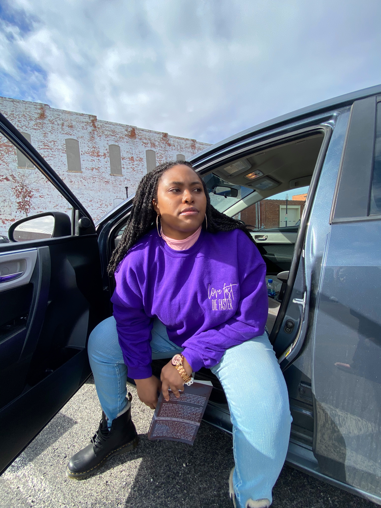

About LAJ
Self-Published Author, LAJ, was born in a rural area in Missouri. She got her love for writing very early on through journal keeping. With the influences of English teachers and the amazing female support system of her family, co-workers, and friends, her journaling turned to poetry, lyrics, short stories, and now novels. When asked who inspired her debut novel LAJ would give the same answer time and time again:
“The women around me. I feel like the women who raised me and who influenced my life, took a lot. Carried a lot. Gave so much there was never anything left for themselves. And in being a mom I’m seeing them through new light, seeing myself in them. In my novels I want those women to get some of what they've lost along the way back. I want them to find hope, find strength, but most of all themselves. I want them to be able to see themselves in the light of positive love. If they couldn't find it in life I want them to at least know what it looks like, what it should feel like.”
LAJ’s work is grounded in representation, healing, and love—especially in the nuanced ways Black women must receive it to truly have it. Her stories are odes to the women around her: their sacrifices, resilience, tenderness, and truth.
Featured Books